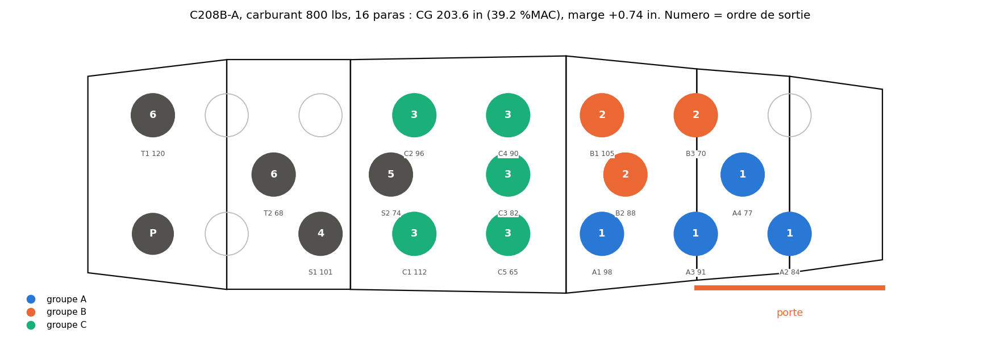

Comment le modèle est posé, pourquoi la preuve d'optimalité est lente, et ce que la littérature propose pour l'accélérer
Un manifeste donne l'avion (C208B-A ou C208B-B : masse à vide et moment à vide), la masse du pilote, le carburant au décollage et la liste des $N$ paras équipés avec, pour chacun, sa masse $m_p$, éventuellement un groupe (qui saute ensemble et veut s'asseoir ensemble), un rang de sortie (ex aequo permis) et, pour les tandems, le rôle porteur ou passager. La cabine offre $S = 20$ places fixes, celles de la disposition N=20 des planches : siège copilote, sept places à droite, cinq au centre, sept à gauche (tableau 1). On cherche la place de chaque para telle que :
| Rangée | Indices $s$ | Bras $a_s$ (in) | $y_s$ (in) |
|---|---|---|---|
| copilote | 0 | 135,5 | +16 |
| droite | 1 à 7 | 155,4 · 180,7 · 205,9 · 231,2 · 256,5 · 281,7 · 307,0 | +16 |
| centre | 8 à 12 | 168,0 · 199,6 · 231,2 · 262,8 · 294,4 | 0 |
| gauche | 13 à 19 | 155,4 · 180,7 · 205,9 · 231,2 · 256,5 · 281,7 · 307,0 | −16 |
L'enveloppe du C208B (cellule 2 des notebooks) est une limite arrière constante à $204{,}35$ in, une limite avant qui recule avec la masse (179,6 in à 5500 lbs, 193,37 in à 8000 lbs, 199,15 in à la MTOW de 9062 lbs, interpolation linéaire entre ces points) et la MTOW. Contrairement aux planches, qui ne vérifient que la limite arrière et la MTOW, le modèle vérifie aussi la limite avant, qui est la contrainte active pendant le largage.
Tout repose sur une observation simple. Notons $W_0$ et $M_0$ la masse et le moment (en lbs et lbs·in/1000) de l'avion vide, du pilote et du carburant, connus avant tout placement. Une fois les paras à bord, la masse totale vaut
quel que soit le placement. Seul le moment dépend des places : si le para $p$ est en $s$, il apporte $m_p a_s / 1000$. Le centre de gravité est le quotient $\mathrm{CG} = M / W$, et la condition d'enveloppe $\mathrm{av}(W) \le \mathrm{CG} \le \mathrm{ar}$ devient, en multipliant par $W$ qui est une constante :
L'enveloppe est donc une bande admissible sur le moment des paras, dont les deux bornes $\ell$ et $h$ sont des nombres calculés une fois pour toutes. C'est pour cela que le programme est linéaire : la limite avant, pourtant fonction de la masse, est évaluée à une masse connue, et il n'y a jamais de produit de deux inconnues. Une marge $\mu$ (en pouces de CG) se traite de même : « $\mathrm{CG} - \mathrm{av} \ge \mu$ » multiplié par $W/1000$ donne un terme $-\mu W/1000$ linéaire en $\mu$.
La même chose vaut à chaque étape du largage : après la sortie des $k$ premiers paras, l'ensemble $R_k$ de ceux qui restent est connu (l'ordre de sortie est une donnée), donc $W_k = W_0 + \sum_{p \in R_k} m_p$ est connu, et la bande $[\ell_k, h_k]$ aussi.
Les tandems n'ajoutent pas de variable : on met à zéro la borne supérieure des $x_{p,s}$ interdits, ce qui revient à supprimer ces variables.
Chaque para a exactement une place, chaque place au plus un para. Sans les contraintes qui suivent, ce serait un problème d'affectation classique dont la relaxation continue a toujours une solution entière : toute la difficulté vient des contraintes « de côté ».
Deux lignes pour tout le centrage. Les masses sont converties en lbs, les bras sont en pouces, le facteur 1000 garde les coefficients du même ordre que les autres (bon conditionnement numérique).
--sequence)Une ligne par étape, sans marge (on exige seulement de rester dans l'enveloppe en vol). Les ex aequo de rang de sortie sont ordonnés par leur position dans le manifeste ; les paras sans rang sortent en dernier. C'est cette famille de contraintes qui bloque en pratique : quand les groupes de queue sont sortis, les paras restants sont tous à l'avant et le CG vient buter sur la limite avant.
Le porteur ne peut occuper qu'une place latérale ayant une place devant elle (rangs 2 à 7 de chaque côté), le passager que la place « juste devant » d'une de celles-là. Pour chaque place porteur admissible $s$ et sa place avant $\mathrm{dev}(s)$ :
Fixer le porteur fixe le passager. Six paras sur seize n'ont plus que douze positions possibles au lieu de vingt, et les deux variables sont liées une à une : c'est la raison pour laquelle l'exemple avec tandems se prouve en 20 s là où l'exemple sans tandems ne se prouve pas en 60 s.
Pour chaque groupe $g$ et chaque membre $p \in g$, la boîte doit contenir la place de $p$. Le script écrit chaque condition sous deux formes, une agrégée et une désagrégée par place :
et symétriquement pour $M^{\min}_g$ (avec $a_{\max} - (a_{\max} - a_s)\,x_{p,s}$) et pour le latéral. Les deux formes sont équivalentes sur les solutions entières ; la forme désagrégée est plus forte sur la relaxation continue, parce qu'elle impose l'implication place par place au lieu de la moyenne (c'est la recette classique « désagréger les contraintes de big-M »). S'y ajoute une borne inférieure exacte sur la taille de la boîte :
la plus petite fenêtre de bras contenant $n_g$ places (bras triés, fenêtre glissante) ; idem latéralement. Sans elle, la relaxation mettrait la boîte à taille nulle.
--groupes-ordonnes)Un groupe qui sort avant est entièrement en arrière d'un groupe qui sort après. C'est une coupe « dure » : elle enlève des solutions admissibles (un groupe imbriqué dans un autre), mais toutes celles qu'elle enlève sont peu réalistes, et elle divise le temps de preuve par trois (section 4).
--cohesion ancre)Une place d'ancrage $z_{g,t} \in \{0,1\}$ par groupe, et des variables produit $y_{p,s,t} = x_{p,s} \cdot z_{g,t}$ linéarisées par $\sum_t y_{p,s,t} = x_{p,s}$ et $y_{p,s,t} \le z_{g,t}$ ; chaque membre paie $\sum_{s,t} d(s,t)\, y_{p,s,t}$, sa distance à l'ancre. C'est la formulation des problèmes de localisation, dont la relaxation est réputée plus serrée, mais elle coûte $S^2 = 400$ variables par membre. Sur le banc, elle donne des boîtes plus compactes mais ne se prouve pas mieux avec HiGHS : le modèle est trop gros.
Soit $r_s$ le rang de la place $s$ par distance croissante à la porte (1 = la plus proche) et $t_p$ le rang de sortie cible du para $p$ (rang moyen en cas d'ex aequo). Le coût est
avec par défaut $w_s = 1$, $w_g = 2$, $w_l = 0{,}5$, et 25 in (le pas entre deux places) pour exprimer les boîtes en « pas ». Comme la place est binaire, la valeur absolue $\lvert r_s - t_p \rvert$ est une constante par couple $(p,s)$ : le premier terme est linéaire sans variable auxiliaire. Le para qui sort premier vise la place la plus proche de la porte, le suivant la deuxième, et ainsi de suite.
Sur l'exemple de référence (C208B-A, pilote 80 kg, 800 lbs, 16 paras pour 1421 kg, groupes A de 4, B de 3, C de 5, quatre solos) avec --sequence :
| Bloc | Lignes | Commentaire |
|---|---|---|
| Affectation (3.2) | 36 | 16 paras + 20 places |
| Décollage (3.3) | 2 | avec la marge $\mu$ |
| Largage (3.4) | 15 | une par étape |
| Boîtes (3.6) | 990 | 12 membres × (2 agrégées + 4 × 20 désagrégées) + 3 × 2 tailles mini |
| Groupes ordonnés (3.7) | 3 | A avant B, A avant C, B avant C |
| Total | 1046 | 333 variables dont 320 binaires ; 6124 coefficients non nuls |
C'est un petit modèle : la relaxation continue se résout en 20 ms. La difficulté n'est pas la taille, c'est la combinatoire.

Le solveur commence par la relaxation continue : le même programme avec $x_{p,s} \in [0,1]$ au lieu de $\{0,1\}$. C'est un programme linéaire, résolu exactement par le simplexe, et sa valeur est une borne inférieure du coût entier optimal (on a agrandi l'ensemble des solutions, donc le minimum ne peut que baisser). Si la solution est entière, c'est fini. Sinon on choisit une variable fractionnaire et on crée deux sous-problèmes, $x_{p,s} = 0$ et $x_{p,s} = 1$ : c'est le branchement, qui construit un arbre. Chaque nœud est de nouveau relaxé ; un nœud dont la borne dépasse la meilleure solution entière connue est élagué, il ne peut rien contenir de mieux. Le solveur s'arrête quand l'écart relatif entre la meilleure solution (borne primale) et la plus petite borne des nœuds ouverts (borne duale) passe sous mip_rel_gap, 1 % ici.
Un solveur moderne fait bien plus à chaque nœud : présolve (élimination de variables et de lignes redondantes), coupes (inégalités valides pour les solutions entières mais violées par la solution fractionnaire : Gomory, MIR, couvertures de sac à dos, cliques), heuristiques primales (arrondis, plongées, RINS, feasibility pump) qui trouvent vite de bonnes solutions entières, détection de symétries, et redémarrages. La règle générale reste : le temps total est gouverné par la qualité de la borne, c'est-à-dire par l'écart entre la relaxation continue et l'optimum entier.
| Formulation (phase 2, 60 s, écart accepté 1 %) | Borne LP racine | Meilleure solution | Borne duale finale | Écart | Nœuds | Temps |
|---|---|---|---|---|---|---|
| boîte | 26,55 | 39,33 | 31,75 | 19 % | 1417 | 60 s (limite) |
| boîte + groupes ordonnés | 26,55 | 41,80 | 41,38 | 1 % | 460 | 20,7 s, prouvé |
Le journal de HiGHS (disp=True) donne la chronologie. Formulation boîte seule : relaxation à 26,55 en 0,1 s, remontée à 28,55 par les coupes de la racine en 2 s, solution à 39,33 trouvée par une heuristique à 7 s, puis 53 s à faire monter la borne duale de 28,6 à 31,9 par branchement (83 s de temps cumulé en strong branching, l'essentiel du travail). Avec « groupes ordonnés » : le présolve élimine 59 variables binaires sur 320 grâce à l'ordre des boîtes, les coupes de racine portent la borne à 29,4, la solution à 41,80 apparaît à 18 s et la preuve tombe à 19,5 s.
Trois enseignements. D'abord la borne à la racine est très basse : 26,5 pour un optimum à 41,8, soit un écart d'intégrité de 36 %. Ensuite la coupe « groupes ordonnés » ne change pas la relaxation continue (même 26,55) : elle agit sur le présolve et sur l'arbre, en supprimant des sous-arbres équivalents, et divise le nombre de nœuds par trois. Enfin la borne duale monte lentement (31,7 après 1417 nœuds) : c'est bien la preuve qui coûte, pas la recherche.
Dans la relaxation, un para peut être « à moitié » sur deux places. Cela lui permet de satisfaire la bande de moment exactement (un demi-para près de la porte, un demi-para à l'avant) tout en payant un coût de rang moyen plus faible que n'importe quelle place entière. Pour les boîtes c'est pire : avec un membre réparti à 0,5 sur deux places aux deux bouts de la cabine, les contraintes désagrégées ne demandent qu'un $M^{\max}$ à mi-chemin et un $M^{\min}$ à mi-chemin, et la boîte redescend à sa taille minimale $\sigma(n_g)$. Sur l'exemple, la relaxation paie environ 6 pour les boîtes (le minimum théorique) contre 12,8 dans la solution entière, et 20,5 pour les rangs de sortie contre 29. Les deux termes trichent, et le solveur doit brancher jusqu'à ce que les paras soient entiers pour que la borne rejoigne la réalité.
mip_rel_gap de 0,1 et un temps limite court donnent la même solution en quelques secondes. Les techniques ci-dessous ne valent que si l'on tient à la preuve, ou si les instances grossissent (deux avions, une journée entière).Le tableau 2 résume la revue ; chaque piste est ensuite détaillée avec ce qu'elle donnerait ici. Les verdicts vont de à faire (gain probable, effort faible) à sans objet.
| Technique | Principe | Ce que ça donnerait ici | Effort | Verdict |
|---|---|---|---|---|
| Formulation plus serrée (fenêtres candidates) | Remplacer la boîte continue par le choix d'une fenêtre parmi quelques centaines, coût exact par fenêtre | Convexifie la cohésion : borne racine de 26,5 à 30,9 et 5 à 20 fois moins de nœuds, mais modèle six fois plus dense, temps total équivalent (5.10) | fait, à alléger | mitigé |
| Coupes métier et symétries | Interdire les solutions équivalentes ou peu réalistes avant de brancher | Déjà en place (groupes ordonnés, tandems) : ×3. Reste : ex aequo de même groupe, masses égales au forfait | heures | à faire |
| CP-SAT (OR-Tools) | Solveur SAT + propagation + LNS + relaxation LP, portefeuille parallèle | Souvent meilleur que les MILP sur l'affectation à contraintes logiques ; test en une journée | 1 jour en Python | à tester |
| Réglages du branch and bound | mip_rel_gap, mip_heuristic_effort, threads, warm start, cutoff | Marginal : les solutions sont déjà trouvées vite, c'est la borne qui manque | heures (highspy ou Rust) | utile, marginal |
| Prétraitement | Éliminer les $x_{p,s}$ impossibles, les étapes de largage redondantes | Réduit un peu l'arbre ; utile pour les grands manifestes | heures | utile, marginal |
| Benders logique / branch and check | Maître : fenêtres par groupe et réalisme ; sous-problème : places individuelles sous centrage ; coupes « no-good » renforcées | Borne exacte sur le réalisme dans le maître, sous-problème minuscule ; mais boucle itérative sans callback dans HiGHS | 2 à 3 jours | 2e option |
| Génération de colonnes / branch-and-price | Une colonne = placement complet d'un groupe ; maître = une colonne par groupe + capacités + bandes de moment ; pricing = petite affectation | Borne de Dantzig-Wolfe strictement meilleure ; mais il faut coder l'arbre soi-même | 1 à 2 semaines | si les instances grossissent |
| Relaxation lagrangienne | Dualiser les bandes de moment ; le reste est une affectation résolue en combinatoire | Borne égale à celle de la relaxation LP (propriété d'intégrité) ; intéressant seulement pour un binaire sans solveur | 1 semaine | sans solveur seulement |
| Benders classique | Variables entières dans le maître, sous-problème continu dualisé | Le sous-problème (boîtes, $\mu$) est trivial : les coupes ne feraient que réécrire les contraintes 3.6 une à une | sans objet |
C'est la piste la plus directe parce qu'elle s'attaque à la cause mesurée en 4.3. Pour un groupe de $n_g$ membres, on énumère à l'avance les fenêtres $w = [a^{\text{lo}}_w, a^{\text{hi}}_w] \times [y^{\text{lo}}_w, y^{\text{hi}}_w]$ dont les bornes sont des bras et des latéraux de places, qui contiennent au moins $n_g$ places, et dont les bornes sont atteintes par une place intérieure (sinon la fenêtre est dominée par une plus petite). Avec 12 bras distincts et 3 rangées cela fait au plus $78 \times 6 = 468$ fenêtres avant filtrage. Une variable binaire $u_{g,w}$ par fenêtre, et :
et le coût de cohésion devient $\frac{w_g}{25}\sum_g \sum_w \big[(a^{\text{hi}}_w - a^{\text{lo}}_w) + w_l (y^{\text{hi}}_w - y^{\text{lo}}_w)\big] u_{g,w}$, exact par fenêtre. Les variables de boîte disparaissent ; « groupes ordonnés » s'écrit $\sum_w a^{\text{lo}}_w u_{g,w} \ge \sum_w a^{\text{hi}}_w u_{h,w}$. Sur la relaxation, le coût d'un groupe est une combinaison convexe de coûts de fenêtres réelles, et tous les membres doivent être dans les mêmes fenêtres avec les mêmes proportions : c'est exactement la convexification que produirait une décomposition de Dantzig-Wolfe de la sous-structure « boîte d'un groupe », obtenue ici sans génération de colonnes parce que les colonnes se comptent en centaines. La borne ne peut qu'augmenter (l'ensemble relâché est inclus dans celui de la formulation boîte). Il faut rester lucide : la relaxation peut encore répartir un groupe à moitié sur deux petites fenêtres opposées, donc le gain sur la borne n'est pas garanti a priori, et le modèle grossit. Le résultat mesuré est en 5.10 : borne nettement meilleure, temps équivalent.
Deux solutions sont symétriques quand elles se déduisent l'une de l'autre par une permutation qui ne change ni le coût ni la faisabilité ; le branch and bound les explore toutes les deux en pure perte. La revue de Pfetsch et Rehn (six méthodes comparées : inégalités de rupture de symétrie, orbital fixing, orbital branching, isomorphism pruning, orbitopes) conclut à un gain modeste en moyenne sur MIPLIB, de l'ordre de 15 %, mais de 10 à 100 fois sur les instances fortement symétriques. HiGHS détecte les symétries automatiquement (mip_detect_symmetry, activé par défaut), mais uniquement les symétries exactes du modèle.
Or le placement a surtout des quasi-symétries : deux membres d'un même groupe ont le même rang de sortie cible, donc le même coût sur toutes les places ; seule leur masse les distingue, à travers les bandes de moment. Le solveur ne peut pas les fusionner, et l'arbre explore toutes les permutations des membres dans la fenêtre du groupe. Trois remèdes, du plus sûr au plus agressif :
CP-SAT (OR-Tools, Apache 2.0) est un solveur hybride : propagation de contraintes, apprentissage de clauses SAT (lazy clause generation), relaxation LP pour les bornes, recherche à grand voisinage (LNS) pour les solutions, et un portefeuille de stratégies en parallèle. Le primer de Krupke le présente comme « compétitif et parfois supérieur aux solveurs MIP », surtout sur les problèmes à contraintes logiques nombreuses et sans variable continue ; les MIP gardent l'avantage quand la relaxation linéaire est forte. Le placement est dans la première catégorie : tout est entier (bras en dixièmes de pouce, masses en dixièmes de lb), l'affectation s'écrit avec AddExactlyOne et AddAtMostOne, les boîtes avec AddMinEquality et AddMaxEquality sans aucune linéarisation, les tandems avec OnlyEnforceIf au lieu de big-M, et une solution de départ (le plan A à E de l'heuristique) se passe par AddHint. Le primer recommande de toujours comparer à HiGHS ou Gurobi sur son propre problème : c'est un essai d'une journée avec pip install ortools, à faire sur l'exemple de référence et le banc de manifestes aléatoires. Pour un binaire Rust ou C++, la contrepartie est une compilation lourde (Abseil, protobuf).
La discussion de référence sur le dépôt HiGHS est sans ambiguïté : mip_heuristic_effort (0,05 par défaut, plus d'effort sur les heuristiques primales) et mip_rel_gap « couvrent l'essentiel de ce que l'on peut faire par réglage » ; les mainteneurs ajoutent que la formulation « peut toujours aider ». Un warm start (donner au solveur une solution entière de départ) permet de couper dès la racine tout ce qui dépasse son coût et aide le présolve, mais, dit la même source, « l'effort principal est de remonter la borne duale, donc l'adjectif warm est généreux ». Ici les heuristiques trouvent déjà la solution finale en quelques secondes : ces réglages ne changeront pas l'ordre de grandeur. Notons que scipy.optimize.milp n'expose ni mip_heuristic_effort, ni le warm start (setSolution), ni le cutoff : il faut passer par highspy, ou par le crate highs en Rust, qui donnent accès à toutes les options.
Avant de résoudre, on peut éliminer les $x_{p,s}$ qui ne peuvent appartenir à aucune solution admissible : fixer $x_{p,s} = 1$ et vérifier si les bornes de moment atteignables par les autres paras (tri des masses contre les bras, comme para_moment_bounds) coupent encore chaque bande $[\ell_k, h_k]$ ; sinon la variable est fixée à zéro. De même, une étape de largage dont la bande contient tout le moment atteignable est redondante et peut être retirée. Ce sont des gains d'arbre modestes, comparables à ce que fait déjà le présolve, mais explicites et donc contrôlables.
Le schéma de Benders (1962) traite $\min\{c^\top x + d^\top y \mid Ax + By \ge b,\ y \in Y,\ x \ge 0\}$ en gardant les variables compliquantes $y$ (entières) dans un maître et en projetant les $x$ continues : pour $\bar y$ fixé, le sous-problème est un programme linéaire dont la solution duale $\bar u$ fournit une coupe d'optimalité $z \ge (b - By)^\top \bar u$ (ou une coupe de faisabilité $(b - By)^\top \bar u \le 0$ si le sous-problème est infaisable), ajoutée au maître, et on itère. La revue de Rahmaniani et al. recense les accélérations (coupes Pareto-optimales de Magnanti-Wong, multi-coupes, inégalités valides dans le maître, branch-and-Benders-cut avec contraintes paresseuses, local branching) et rappelle que plus de 90 % du temps se passe en général dans le maître.
Ici la structure n'y est pas. Une fois les $x_{p,s}$ fixés, les seules variables continues sont $\mu$ et les bornes de boîtes, et le sous-problème se résout en lisant le min et le max des bras occupés. Les coupes de Benders ne feraient que reconstruire, une itération à la fois, les contraintes 3.6 que le modèle compact écrit d'emblée, avec une relaxation plus faible en prime. Benders classique est fait pour des sous-problèmes continus gros (conception de réseaux, programmes stochastiques à deux étapes), pas pour celui-ci.
Hooker généralise Benders au cas où le sous-problème est un problème d'optimisation quelconque : la coupe vient d'un dual d'inférence, c'est-à-dire de la preuve d'optimalité ou d'infaisabilité du sous-problème, et elle doit être conçue pour chaque classe de problème. Le motif canonique, celui qui a donné des accélérations « de plusieurs ordres de grandeur » en planification-ordonnancement, est : maître MILP d'affectation, sous-problèmes de faisabilité résolus par programmation par contraintes, coupes « no-good » renforcées, et, condition de succès soulignée par l'auteur, une relaxation du sous-problème exprimée dans les variables du maître.
Le placement se découpe naturellement de cette façon :
Le maître porte alors une borne exacte sur le réalisme, ce qui règle le problème de 4.3, et le sous-problème ne coûte rien. Le risque est le nombre d'itérations si le centrage en vol rend infaisables beaucoup de combinaisons de fenêtres ; la relaxation agrégée dans le maître sert précisément à limiter cela. Le branch and check (une seule résolution du maître, sous-problème vérifié à chaque solution entière rencontrée, coupe ajoutée en contrainte paresseuse) est la variante efficace, mais elle suppose un solveur avec callback de contraintes paresseuses : SCIP, CBC, Gurobi ou CP-SAT le permettent, HiGHS non, ce qui impose la boucle itérative maître-sous-problème. Deux à trois jours de développement ; c'est la deuxième option si les fenêtres seules ne suffisent pas.
La décomposition de Dantzig-Wolfe réécrit un programme dont les contraintes se séparent en blocs faciles reliés par quelques contraintes couplantes : chaque bloc est remplacé par une combinaison convexe de ses solutions entières (les colonnes), et le maître ne garde que les contraintes couplantes. Comme les colonnes sont trop nombreuses pour être écrites, on résout un maître restreint sur un sous-ensemble, on lit ses variables duales $\pi$, et un problème de pricing par bloc cherche une colonne de coût réduit négatif $c_j - \pi^\top a_j \lt 0$ ; s'il n'y en a pas, la relaxation est optimale. Sa valeur est en général strictement meilleure que celle du modèle compact, parce que l'on optimise sur l'enveloppe convexe des solutions entières de chaque bloc (Lübbecke, Feillet). Pour obtenir l'optimum entier, il faut brancher en restant compatible avec le pricing (règle de Ryan-Foster sur les paires d'éléments, ou branchement sur les variables du problème original) : c'est le branch-and-price.
Ici, un bloc est un groupe : une colonne est un placement complet du groupe (fenêtre et place de chaque membre), avec son coût de réalisme exact et son vecteur de moments (décollage et chaque étape). Le maître choisit une colonne par groupe et garde les solos en variables $x$, sous les capacités des places et les bandes de moment. Le pricing d'un groupe, pour des duals $\pi_s$ sur les places et $\lambda_k$ sur les bandes, est une petite affectation membres × places avec un terme linéaire en $\lambda$ : quelques millisecondes. La borne obtenue domine celle de 5.1, puisqu'elle convexifie aussi la répartition des membres, pas seulement la fenêtre. Mais HiGHS n'offre pas de branch-and-price : il faut écrire l'arbre, la gestion des colonnes et la stabilisation des duals soi-même, une à deux semaines. Pour 16 paras et 3 groupes, c'est disproportionné ; cela devient pertinent si le problème s'étend à tous les sticks d'une journée sur deux avions, où le nombre de groupes se compte en dizaines.
Fisher (1981) décrit la recette : garder les contraintes « faciles » (l'affectation) et déplacer les « pénibles » (les bandes de moment) dans l'objectif avec des multiplicateurs $\lambda \ge 0$ ; pour $\lambda$ fixé le problème relâché est une affectation résolue en combinatoire, et $\max_\lambda$ (par sous-gradient) donne une borne. Le théorème de Geoffrion tempère : quand le problème facile a la propriété d'intégrité (sa relaxation continue est entière, ce qui est le cas de l'affectation), la borne lagrangienne égale celle de la relaxation LP. On ne gagnerait donc rien en qualité de borne par rapport à ce que HiGHS calcule déjà en 20 ms. L'intérêt serait ailleurs : construire un branch and bound maison, sans aucun solveur, dans un binaire Rust pur, où chaque borne se calcule par un algorithme hongrois. C'est une semaine de travail pour un résultat au mieux équivalent, à ne considérer que si l'absence de compilateur C sur la machine cible devient une contrainte dure.
La formulation de 5.1 a été codée telle quelle (bench_fenetres.py, même exemple, même temps limite) pour mesurer plutôt que supposer :
| Formulation (phase 2, 60 s) | Variables | Lignes | Borne LP racine | Meilleure solution | Borne duale finale | Nœuds | Temps |
|---|---|---|---|---|---|---|---|
| boîte | 333 | 1043 | 26,55 | 39,33 | 31,75 | 1417 | 60 s, écart 19 % |
| fenêtres | 849 | 2338 | 30,93 | 39,79 | 33,66 | 67 | 60 s, écart 15 % |
| boîte + ordonnés | 333 | 1046 | 26,55 | 41,80 | 41,38 | 460 | 20,7 s, prouvé |
| fenêtres + ordonnés | 849 | 2341 | 30,94 | 41,80 | 41,47 | 89 | 27,4 s, prouvé |
Après filtrage il reste 172, 213 et 143 fenêtres pour les groupes A, B et C. La borne racine passe de 26,5 à 30,9 (écart d'intégrité de 36 % à 26 %) et le nombre de nœuds est divisé par 5 à 20 : la relaxation est bien plus serrée, comme prévu. Mais le programme linéaire est six fois plus dense (38 000 coefficients contre 6 000) et chaque nœud coûte d'autant plus : au total, le temps de preuve est équivalent (27 s contre 21 s) et l'écart résiduel sans « ordonnés » n'est que légèrement meilleur (15 % contre 19 %). Le gain sur la borne est réel mais il est absorbé par le coût du modèle. Pour le convertir en temps, il faudrait un encodage plus léger : ne garder que le lien $x_{p,s} \le \sum_{w \ni s} u_{g,w}$ (la moitié des lignes), éliminer par dominance les fenêtres qui ne peuvent jamais être une boîte englobante optimale, ou brancher en priorité sur les $u$ (ce que HiGHS ne permet pas de dicter, mais CP-SAT si, via ses stratégies de décision). En l'état, sur cette taille d'instance, la coupe « groupes ordonnés » fait plus pour le temps de calcul que le resserrement de la formulation.
mip_rel_gap à 10 % et 10 s de limite suffisent dès aujourd'hui) ou une preuve d'optimalité (alors ce qui suit).test_placement.py.mip_heuristic_effort : une demi-journée, gain marginal mais gratuit.Le modèle se transporte tel quel : c'est une matrice creuse en triplets (ligne, colonne, coefficient), des bornes de lignes et de variables, un vecteur de coût et un masque d'intégrité, exactement ce que construit build(). En Rust, le crate highs (bindings sûrs, compile HiGHS par cmake via highs-sys) prend ces triplets directement ; good_lp offre une couche de modélisation par expressions avec HiGHS en backend et permet de basculer sur CBC, SCIP (russcip) ou microlp par simple feature. En C++, HiGHS s'ajoute par add_subdirectory ou FetchContent et se lie en statique ; son API C (Highs_passMip, Highs_setSolution, Highs_setDoubleOptionValue) couvre le warm start et toutes les options de la section 5.4. Dans les deux cas il faut un compilateur C++ sur la machine de build, ce qui manque sur le poste actuel ; la bibliothèque statique peut être construite ailleurs avec la même cible musl et liée via build.rs.